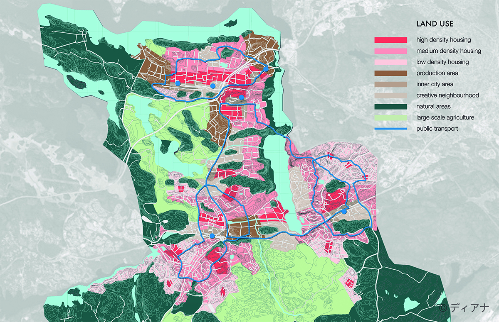

Connected but Independent
Master's Project
Our vision for Botkyrka in 2050 can be distilled into three words, ‘connected but independent’. At the moment Botkyrka relies on Stockholm for work, education and entertainment. By 2050 it will be a town that stands on its own two feet, using it’s relationship with the city when its wants to. Botkyrka will be a self sufficient town, with a resilient network of interrelated systems that work together to ensure its citizens should have everything they need close to hand.
 Regional Strategies in Botkyrka | Plan | Diana Carrillo Silva
The intervention develops mainly different mobility strategies that work around a network of town squares like tunneling the pendeltåg at Tumba and Tullinge, closing non-essential, and residential, roads to car traffic and expandind the public transport network among neighbourhoods. As complementary layers to the system, we suggest the creation of renewable energy sources, the stablishment storm water parks and energy forests, the development of greenhouses and urban farms and the encouragement of material centers.